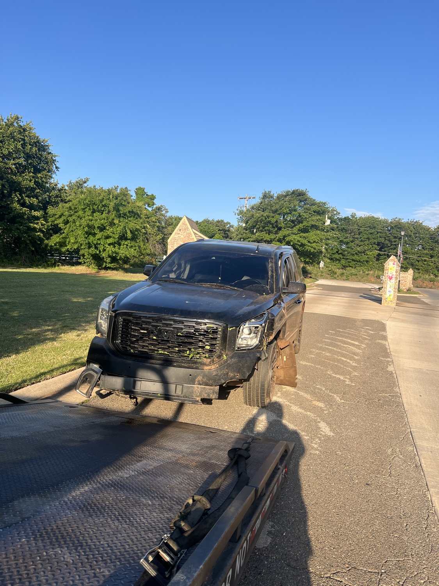

Winch-Out & Vehicle Recovery in OKC & Edmond
Stuck? We evaluate and recover — 24/7. Call (405) 679-6655

When a vehicle is stuck and cannot return to the roadway under its own power, Sawa Towing LLC can evaluate the situation and provide winch-out or vehicle recovery service in Oklahoma City and Edmond. We are available 24 hours a day. Pricing depends on access, vehicle position, equipment needed, and recovery conditions.
Help for stuck and disabled vehicles
Call for vehicles stuck in mud, soft ground, a ditch, or another accessible off-road position, as well as accident-related recovery. Every recovery is different, so we will ask questions before confirming service.
Photos can help us understand the job
If it is safe, be ready to describe the vehicle's position, terrain, nearby obstacles, and whether all wheels are on the ground. We may ask for photos after the call so we can better assess equipment and access needs.
Safety comes first
Stay away from traffic and do not stand near tensioned cables, unstable vehicles, or steep edges. If the scene involves injuries, fire, leaking fuel, or immediate danger, call 911 first.
Need a winch-out or recovery?
Call with your location, vehicle details, and a clear description of the situation. Open 24 hours.